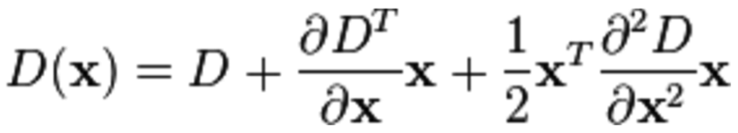
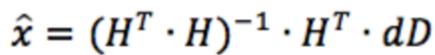
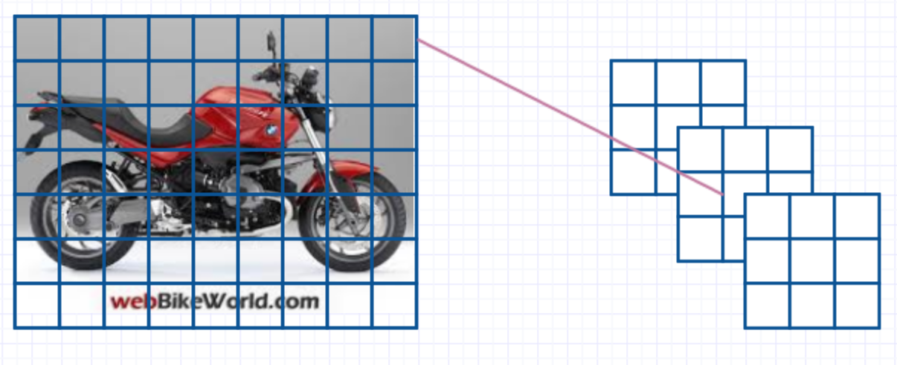
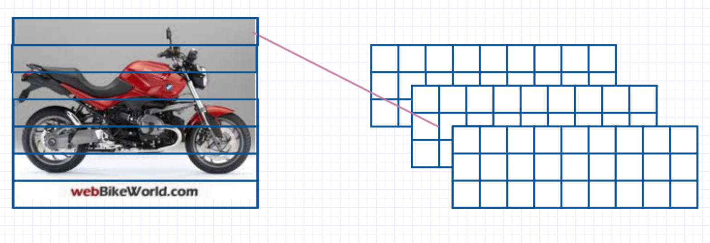
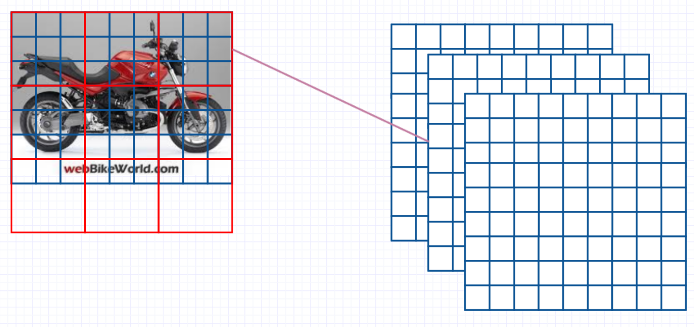

Pyopencl, Opencv (cv2 package in python)
Intel Iris
Python (for general functionalities and pyopencl)
C (for kernel code and rewritten mathmetica functions)
In this part corresponding code will be described versus each stage.
# Following are the prepared data for further SIFT computations
doubled # image data of doubled size
normal # image data of original size
halved # image data of halfed size
quartered # image data of quartered size
pyrlvl1 # Gaussian Pyramid corresponding to double sized image
pyrlvl2 # Gaussian Pyramid corresponding to original sized image
pyrlvl3 # Gaussian Pyramid corresponding to half sized image
pyrlvl4 # Gaussian Pyramid corresponding to quartered sized image
diffpyrlvl1 # Difference of Gaussian corresponding to double sized image
diffpyrlvl2 # Difference of Gaussian corresponding to original sized image
diffpyrlvl3 # Difference of Gaussian corresponding to half sized image
diffpyrlvl4 = Difference of Gaussian corresponding to double quartered image
From now on we have prepared all the scales for SIFT stages.
We calculate each extrema for each scale and calculate extrema for each layer within each scale.
# Following is the python code calling opencl functions
extrlvl1_gpu, difflvl1_gpu = oclu.createExtraBuffer(extrpyrlvl1, diffpyrlvl1)
for i in range(1, 4):
oclu.extractMin(extrlvl1_gpu, difflvl1_gpu, threshold, 80,\
diffpyrlvl1.shape[0], diffpyrlvl1.shape[1], diffpyrlvl1.shape[2], i)
extrpyrlvl1 = extrlvl1_gpu.get()
extrlvl2_gpu, difflvl2_gpu = oclu.createExtraBuffer(extrpyrlvl2, diffpyrlvl2)
for i in range(1, 4):
oclu.extractMin(extrlvl2_gpu, difflvl2_gpu, threshold, 40,\
diffpyrlvl2.shape[0], diffpyrlvl2.shape[1], diffpyrlvl2.shape[2], i)
extrpyrlvl2 = extrlvl2_gpu.get()
extrlvl3_gpu, difflvl3_gpu = oclu.createExtraBuffer(extrpyrlvl3, diffpyrlvl3)
for i in range(1, 4):
oclu.extractMin(extrlvl3_gpu, difflvl3_gpu, threshold, 20,\
diffpyrlvl3.shape[0], diffpyrlvl3.shape[1], diffpyrlvl3.shape[2], i)
extrpyrlvl3 = extrlvl3_gpu.get()
print "Fourth octave", quartered.shape
extrlvl4_gpu, difflvl4_gpu = oclu.createExtraBuffer(extrpyrlvl4, diffpyrlvl4)
for i in range(1, 4):
oclu.extractMin(extrlvl4_gpu, difflvl4_gpu, threshold, 10,\
diffpyrlvl4.shape[0], diffpyrlvl4.shape[1], diffpyrlvl4.shape[2], i)
extrpyrlvl4 = extrlvl4_gpu.get()
In this part we need to solve the following second order derivative equation.
It’s hard to sovle this equation programmatically. So we made the following two approaches: a) Represent derivatives using nearby points. b) Transfer this problem into a least-square linear fitting problem.
We calculate
first order derivatives: dx, dy, ds,
second order derivatives: dxx, dyy, dss, dxy, dxs, dys
Totally 9 derivatives around the candidate key point.
dD = [ [dx],
[dy],
[ds] ]
H = [[dxx, dxy, dxs],
[dxy, dyy, dys],
[dxs, dys, dss]]
dD = H * x_hat
We apply least-square fitting to get x_hat which specifies the deviation from the candidate key point.
We calculate the x_hat from the following matrix calculation.

We simulate the derivative by nearby points. Following is our kernel code in C;
float dx = (diffpyrlvl[getIdx(j, k + 1, i, m, n, l)]
- diffpyrlvl[getIdx(j, k - 1, i, m, n, l)]) * 0.5f / 255;
float dy = (diffpyrlvl[getIdx(j + 1, k, i, m, n, l)]
- diffpyrlvl[getIdx(j - 1, k, i, m, n, l)]) * 0.5f / 255;
float ds = (diffpyrlvl[getIdx(j, k, i + 1, m, n, l)]
- diffpyrlvl[getIdx(j, k, i - 1, m, n, l)]) * 0.5f / 255;
float dxx = (diffpyrlvl[getIdx(j, k + 1, i, m, n, l)]
+ diffpyrlvl[getIdx(j, k - 1, i, m, n, l)]
- 2 * diffpyrlvl[getIdx(j, k, i, m, n, l)]) * 1.0f / 255;
float dyy = (diffpyrlvl[getIdx(j + 1, k, i, m, n, l)]
+ diffpyrlvl[getIdx(j - 1, k, i, m, n, l)]
- 2 * diffpyrlvl[getIdx(j, k, i, m, n, l)]) * 1.0f / 255;
float dss = (diffpyrlvl[getIdx(j, k, i + 1, m, n, l)]
+ diffpyrlvl[getIdx(j, k, i - 1, m, n, l)]
- 2 * diffpyrlvl[getIdx(j, k, i, m, n, l)]) * 1.0f / 255;
float dxy = (diffpyrlvl[getIdx(j + 1, k + 1, i, m, n, l)]
- diffpyrlvl[getIdx(j + 1, k - 1, i, m, n, l)]
- diffpyrlvl[getIdx(j - 1, k + 1, i, m, n, l)]
+ diffpyrlvl[getIdx(j - 1, k - 1, i, m, n, l)]) * 0.25f / 255;
float dxs = (diffpyrlvl[getIdx(j, k + 1, i + 1, m, n, l)]
- diffpyrlvl[getIdx(j, k - 1, i + 1, m, n, l)]
- diffpyrlvl[getIdx(j, k + 1, i - 1, m, n, l)]
+ diffpyrlvl[getIdx(j, k - 1, i - 1, m, n, l)]) * 0.25f / 255;
float dys = (diffpyrlvl[getIdx(j + 1, k, i + 1, m, n, l)]
- diffpyrlvl[getIdx(j - 1, k, i + 1, m, n, l)]
- diffpyrlvl[getIdx(j + 1, k, i - 1, m, n, l)]
+ diffpyrlvl[getIdx(j - 1, k, i - 1, m, n, l)]) * 0.25f / 255;
We implement our own least-square function in C as following
float det_three(float *M) {
float result = 0.0f;
//printf("%f", DET_TWO(M[1][1], M[1][2], M[2][1], M[2][2]));
result += M[0] * DET_TWO(M[4], M[5], M[7], M[8]);
result -= M[1] * DET_TWO(M[3], M[5], M[6], M[8]);
result += M[2] * DET_TWO(M[3], M[4], M[6], M[7]);
return result;
}
void inv_matrix(float *INV, float *M) {
float det = det_three(M);
INV[0] = DET_TWO(M[4], M[5], M[7], M[8]) / det;
INV[3] = -1.0f * DET_TWO(M[3], M[5], M[6], M[8]) / det;
INV[6] = DET_TWO(M[3], M[4], M[6], M[7]) / det;
INV[1] = -1.0f * DET_TWO(M[1], M[2], M[7], M[8]) / det;
INV[4] = DET_TWO(M[0], M[2], M[6], M[8]) / det;
INV[7] = -1.0f * DET_TWO(M[0], M[1], M[6], M[7]) / det;
INV[2] = DET_TWO(M[1], M[2], M[4], M[5]) / det;
INV[5] = -1.0f * DET_TWO(M[0], M[1], M[6], M[7]) / det;
INV[8] = DET_TWO(M[0], M[1], M[3], M[4]) / det;
}
void transpose(float *MT, float *M) {
for (unsigned int i = 0; i < DIM; i++)
for (unsigned int j = 0; j < DIM; j++)
MT[i * DIM + j] = M[j * DIM + i];
}
void multiplicate(float *C, float *A, float *B,
int m, int n, int l) {
float grid = 0.0f;
unsigned int i, j, k;
for (i = 0; i < m; i++)
for (j = 0; j < l; j++) {
grid = 0.0f;
for (k = 0; k < n; k++)
grid += A[i * n + k] * B[k * l + j];
C[i * l + j] = grid;
}
}
void least_square(float *C,float *A, float *B) {
float T[DIM * DIM], TA[DIM * DIM], INV[DIM * DIM], INVT[DIM * DIM];
transpose(T, A);
multiplicate(TA, T, A, DIM, DIM, DIM);
inv_matrix(INV, TA);
multiplicate(INVT, INV, T, DIM, DIM, DIM);
multiplicate(C, INVT, B, DIM, DIM, 1);
}
To verify the accuracy, we compare the result with the built-in function: numpy.linalg.lstsq(H, dD) works will for us.
/* We have two Paralism Optimization approaches: */
/* 1) Use Gaussian Window to weight the orientation for each pixel. */
float gaussian_window_pdf(
float x, float y,
float sigm_x, float sigm_y, float u_x, float u_y) {
float result = 1.0 / (2 * M_PI * sigm_x * sigm_y)
* exp(-0.5f
* (
(x - u_x) * (x - u_x) / (sigm_x * sigm_x)
+ (y - u_y) * (y - u_y) / (sigm_y * sigm_y)
)
);
return result;
}
/* 2) Calculate the historgram for 8 direction within each window */
float orient_hist[ORIENT_HIST_LEN];
for (int x = -1 * two_sd * 2; x < two_sd * 2 + 1; x++) {
int ylim = sqrt((float)(4 * two_sd * two_sd - abs(x) * abs(x)));
for (int y = -1 * ylim; y < ylim + 1; y++) {
if (j + x < 0 || j + x > m - 1 || k + y < 0 || k + y > n - 1)
continue;
int idx = getIdx_3d(j + x, k + y, i, m, n, l);
weight = magpyrlvl[idx]
* gaussian_window_pdf(j + x, k + y, sigm, sigm, u_x, u_y);
int oriClip = oripyrlvl[idx];
bin_idx = clipNum(oriClip, 0, 35);
orient_hist[bin_idx] += weight;
}
}
In this strategy, each work item only cache 27 point data from neighboring scale.
In this strategy, each work item takes care of one row of points from neighboring scale.
In this strategy, each work item takes care of one group of points from neighboring scale.
